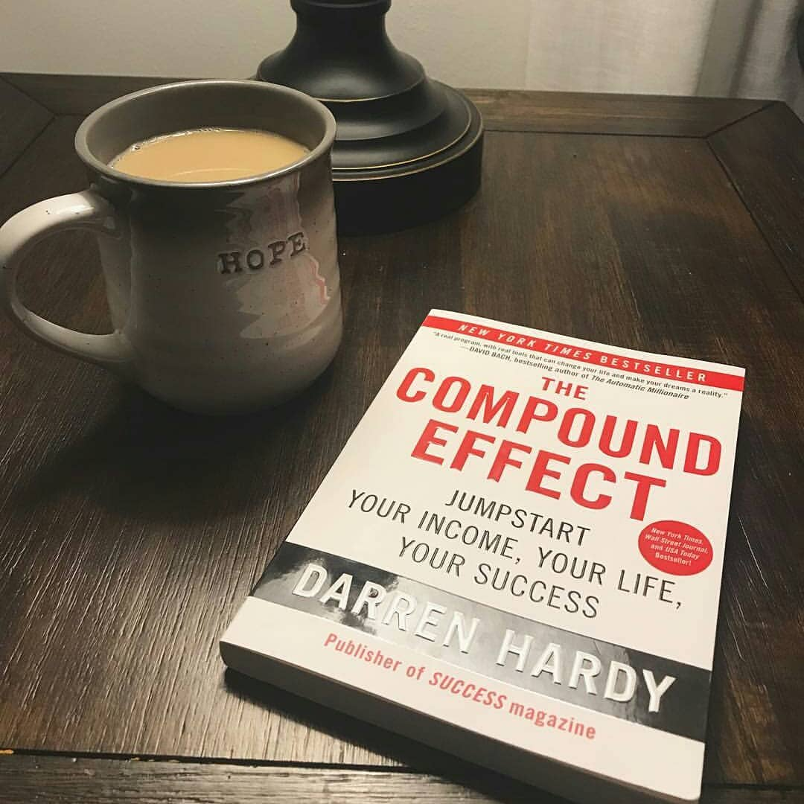
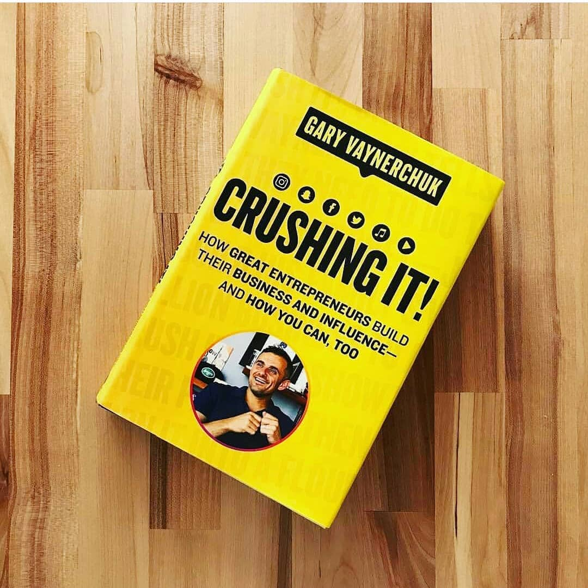

In this generation-defining self-help guide, a superstar blogger cuts through the crap to show us how to stop trying to be "positive" all the time so that we can truly become better, happier people.
For decades, we’ve been told that positive thinking is the key to a happy, rich life. "F**k positivity," Mark Manson says. "Let’s be honest, shit is f**ked and we have to live with it." In his wildly popular Internet blog, Manson doesn’t sugarcoat or equivocate. He tells it like it is—a dose of raw, refreshing, honest truth that is sorely lacking today. The Subtle Art of Not Giving a F**k is his antidote to the coddling, let’s-all-feel-good mindset that has infected American society and spoiled a generation, rewarding them with gold medals just for showing up.
Manson makes the argument, backed both by academic research and well-timed poop jokes, that improving our lives hinges not on our ability to turn lemons into lemonade, but on learning to stomach lemons better. Human beings are flawed and limited—"not everybody can be extraordinary, there are winners and losers in society, and some of it is not fair or your fault." Manson advises us to get to know our limitations and accept them. Once we embrace our fears, faults, and uncertainties, once we stop running and avoiding and start confronting painful truths, we can begin to find the courage, perseverance, honesty, responsibility, curiosity, and forgiveness we seek.
There are only so many things we can give a f**k about so we need to figure out which ones really matter, Manson makes clear. While money is nice, caring about what you do with your life is better, because true wealth is about experience. A much-needed grab-you-by-the-shoulders-and-look-you-in-the-eye moment of real-talk, filled with entertaining stories and profane, ruthless humor, The Subtle Art of Not Giving a F**k is a refreshing slap for a generation to help them lead contented, grounded lives
Have you ever found yourself stretched too thin?
Do you simultaneously feel overworked and underutilized?
Are you often busy but not productive?
Do you feel like your time is constantly being hijacked by other people’s agendas?
If you answered yes to any of these, the way out is the Way of the Essentialist.
The Way of the Essentialist isn’t about getting more done in less time. It’s about getting only the right things done. It is not a time management strategy, or a productivity technique. It is a systematic discipline for discerning what is absolutely essential, then eliminating everything that is not, so we can make the highest possible contribution towards the things that really matter.
By forcing us to apply a more selective criteria for what is Essential, the disciplined pursuit of less empowers us to reclaim control of our own choices about where to spend our precious time and energy – instead of giving others the implicit permission to choose for us.
Essentialism is not one more thing – it’s a whole new way of doing everything. A must-read for any leader, manager, or individual who wants to learn who to do less, but better, in every area of their lives, Essentialism is a movement whose time has come

No gimmicks. No Hyperbole. No Magic Bullet. The Compound Effect is based on the principle that decisions shape your destiny. Little, everyday decisions will either take you to the life you desire or to disaster by default. Darren Hardy, publisher of Success Magazine, presents The Compound Effect, a distillation of the fundamental principles that have guided the most phenomenal achievements in business, relationships, and beyond. This easy-to-use, step-by-step operating system allows you to multiply your success, chart your progress, and achieve any desire. If you’re serious about living an extraordinary life, use the power of The Compound Effect to create the success you want

Four-time New York Times best-selling author Gary Vaynerchuk offers new lessons and inspiration drawn from the experiences of dozens of influencers and entrepreneurs who rejected the predictable corporate path in favor of pursuing their dreams by building thriving businesses and extraordinary personal brands.
In his 2009 international best seller Crush It, Gary insisted that a vibrant personal brand was crucial to entrepreneurial success. In Crushing It! Gary explains why that's even more true today, offering his unique perspective on what has changed and what principles remain timeless. He also shares stories from other entrepreneurs who have grown wealthier - and not just financially - than they ever imagined possible by following Crush It principles. The secret to their success (and Gary's) has everything to do with their understanding of the social media platforms and their willingness to do whatever it took to make these tools work to their utmost potential. That's what Crushing It! teaches listeners to do.
In this lively, practical, and inspiring audiobook, Gary dissects every current major social media platform so that anyone, from a plumber to a professional ice skater, will know exactly how to amplify his or her personal brand on each. He offers both theoretical and tactical advice on how to become the biggest thing on old standbys like Twitter, Facebook, YouTube, Instagram, Pinterest, and Snapchat; podcast platforms like Spotify, Soundcloud, iHeartRadio, and iTunes; and other emerging platforms such as Musical.ly. For those with more experience, Crushing It! illuminates some little-known nuances and provides innovative tips and clever tweaks proven to enhance more common tried-and-true strategies.
Crushing It! is a state-of-the-art guide to building your own path to professional and financial success, but it's not about getting rich. It's a blueprint to living life on your own terms.
The consensus is clear: MBA programs are a waste of time and money. Even the elite schools offer outdated assembly-line educations about profit-and-loss statements and PowerPoint presentations. After two years poring over sanitized case studies, students are shuffled off into middle management to find out how business really works.
Josh Kaufman has made a business out of distilling the core principles of business and delivering them quickly and concisely to people at all stages of their careers. His blog has introduced hundreds of thousands of readers to the best business books and most powerful business concepts of all time. In The Personal MBA, he shares the essentials of sales, marketing, negotiation, strategy, and much more.
True leaders aren't made by business schools-they make themselves, seeking out the knowledge, skills, and experiences they need to succeed. Read this book and in one week you will learn the principles it takes most people a lifetime to master.
Kafka on the Shore, a tour de force of metaphysical reality, is powered by two remarkable characters: a teenage boy, Kafka Tamura, who runs away from home either to escape a gruesome oedipal prophecy or to search for his long-missing mother and sister; and an aging simpleton called Nakata, who never recovered from a wartime affliction and now is drawn toward Kafka for reasons that, like the most basic activities of daily life, he cannot fathom. Their odyssey, as mysterious to them as it is to us, is enriched throughout by vivid accomplices and mesmerizing events. Cats and people carry on conversations, a ghostlike pimp employs a Hegel-quoting prostitute, a forest harbors soldiers apparently unaged since World War II, and rainstorms of fish (and worse) fall from the sky. There is a brutal murder, with the identity of both victim and perpetrator a riddle—yet this, along with everything else, is eventually answered, just as the entwined destinies of Kafka and Nakata are gradually revealed, with one escaping his fate entirely and the other given a fresh start on his own
Anna Fox lives alone—a recluse in her New York City home, unable to venture outside. She spends her day drinking wine (maybe too much), watching old movies, recalling happier times . . . and spying on her neighbors.
Then the Russells move into the house across the way: a father, a mother, their teenage son. The perfect family. But when Anna, gazing out her window one night, sees something she shouldn’t, her world begins to crumble—and its shocking secrets are laid bare.
What is real? What is imagined? Who is in danger? Who is in control? In this diabolically gripping thriller, no one—and nothing—is what it seems.
In the stories of Adjei-Brenyah’s debut, an amusement park lets players enter augmented reality to hunt terrorists or shoot intruders played by minority actors, a school shooting results in both the victim and gunman stuck in a shared purgatory, and an author sells his soul to a many-tongued god.
Adjei-Brenyah's writing will grab you, haunt you, enrage, and invigorate you. By placing ordinary characters in extraordinary situations, Adjei-Brenyah reveals the violence, injustice, and painful absurdities that black men and women contend with every day. These stories tackle urgent instances of racism and cultural unrest and explore the many ways we fight for humanity in an unforgiving world
Lowen Ashleigh is a struggling writer on the brink of financial ruin when she accepts the job offer of a lifetime. Jeremy Crawford, husband of bestselling author Verity Crawford, has hired Lowen to complete the remaining books in a successful series his injured wife is unable to finish.
Lowen arrives at the Crawford home, ready to sort through years of Verity's notes and outlines, hoping to find enough material to get her started. What Lowen doesn't expect to uncover in the chaotic office is an unfinished autobiography Verity never intended for anyone to read. Page after page of bone-chilling admissions, including Verity's recollection of what really happened the day her daughter died.
Lowen decides to keep the manuscript hidden from Jeremy, knowing its contents would devastate the already grieving father. But as Lowen's feelings for Jeremy begin to intensify, she recognizes all the ways she could benefit if he were to read his wife's words. After all, no matter how devoted Jeremy is to his injured wife, a truth this horrifying would make it impossible for him to continue to love her.
A standalone romantic thriller from #1 New York Times bestselling author Colleen Hoover